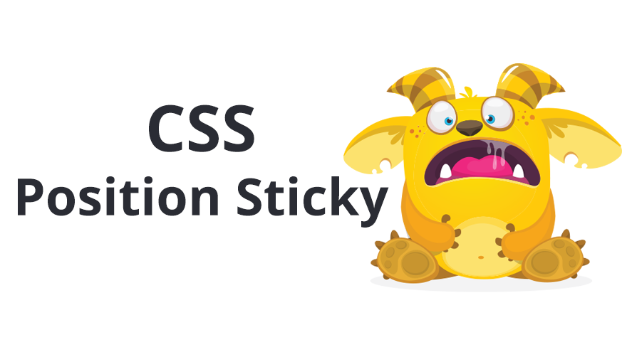
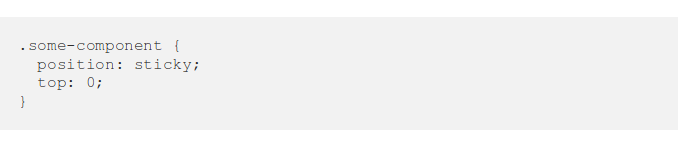
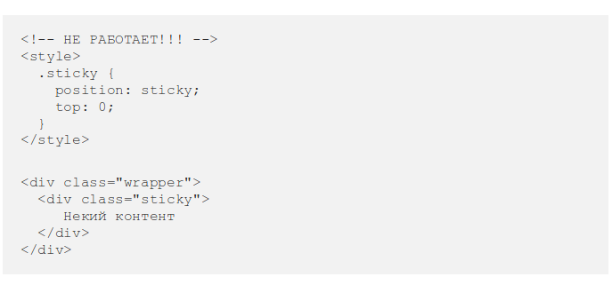
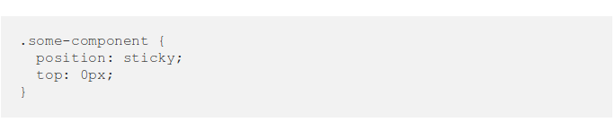
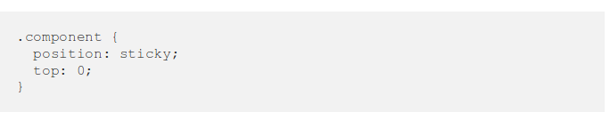
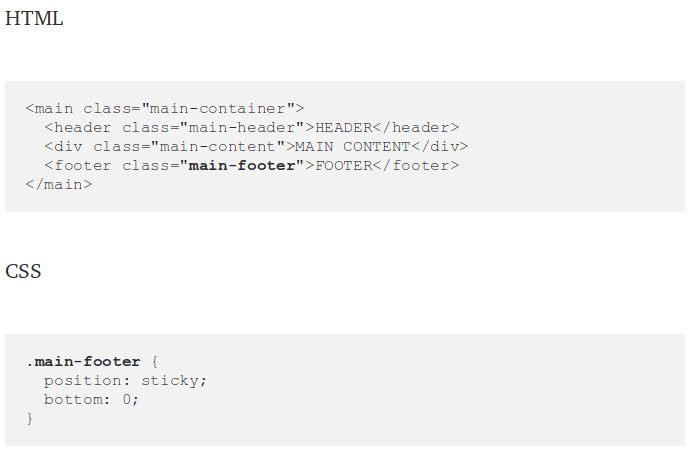

У position: sticky уже очень неплохая браузерная поддержка, но большинство разработчиков так и не используют это свойство.
У этого есть две основные причины: во-первых, браузерам потребовалось много времени на реализацию адекватной поддержки этого свойства. И все просто успели забыть о нём.
Во-вторых, многие разработчики до конца не понимают логику, по которой это свойство работает. И тут появляюсь я!
Я полагаю, что вы хорошо знакомы с позиционированием в CSS, но давайте кратко повторим основные моменты:
Ещё три года назад существовало четыре типа позиционирования: static , relative , absolute и fixed .
Основное различие между static и relative , absolute и fixed в том, какое место они занимают в потоке документа (DOM). Элементы с позицией static и relative сохраняют своё естественное положение в потоке документа, в то время как absolute и fixed «вырываются» из потока документа и становятся плавающими. Новое значение sticky похоже на все предыдущие значения сразу.
Думаю, что большинство из вас игрались с «липким» позиционированием. Так было и у меня, пока в один момент я не осознал, что совсем не понимаю это свойство.
При первом знакомстве с position: sticky все быстро понимают, что элемент залипает, когда область просмотра достигает определённой позиции.
Проблема в том, что иногда это работает, а иногда нет. Когда всё работает, то элемент и правда залипает. Но когда не работает, то при прокрутке элемент перестаёт залипать. Как человеку, который живёт одним только CSS, мне было важно разобраться в сути проблемы. Именно поэтому я решил тщательно изучить «липкое» позиционирование.
Во время своих экспериментов я заметил, что если элемент с position: sticky является единственным ребёнком своего родителя-обёртки, то этот «липкий» элемент не залипает.
Когда я добавлял больше элементов внутрь родителя-обёртки всё начинало работать как ожидалось.
Почему так происходит? Причина кроется в том, что элемент с position: sticky может перемещаться только в пределах контейнера, в котором находится. А поскольку в моём случае он был единственным ребёнком, у него не было элементов-братьев, поверх которых он мог перемещаться.
«Липкое» позиционирование состоит из двух основных частей: «липкого» элемента и «липкого» контейнера.
«Липкий» элемент — это элемент, которому мы задали position: sticky. Элемент будет становиться плавающим, как только область видимости достигнет определённой позиции, например top: 0px.
«Липкий» контейнер — это HTML-элемент, который оборачивает «липкий» элемент. Это максимальная область, в которой может перемещаться наш элемент.
Когда вы задаёте элементу position: sticky, его родитель автоматически становится «липким» контейнером! Очень важно это запомнить! Контейнер будет являться областью видимости для элемента. «Липкий» элемент не может выйти за пределы своего «липкого» контейнера. В этом причина, почему в предыдущем примере «липкий» элемент не залипал: он был единственным дочерним элементом контейнера.
Как я и говорил, position: sticky ведёт себя не так, как другие типы позиционирования. Но, с другой стороны, у них есть определённые сходства. Позвольте мне пояснить:
Относительное (или статичное) — «липкий» элемент похож на элемент со статическим или относительным позиционированием поскольку сохраняет свою естественную позицию в DOM (остаётся в потоке). Фиксированное—когда элемент залипает, то ведёт себя как будто у него заданы стили position: fixed, остаётся на той же позиции в области видимости и вырывается из потока документа. Абсолютное—в конце доступной для перемещений области элемент останавливается и остаётся поверх другого элемента. Точно также, как ведёт себя абсолютно спозиционированный элемент в контейнере с position: relative.
В большинстве случаев вы будете использовать position: sticky чтобы прикрепить элемент к верхнему краю страницы. Что-то вроде этого:
Именно для таких сценариев и был создан этот тип позиционирования. До его появления такой трюк приходилось проворачивать с помощью JavaScript.
Но вы с тем же успехом можете использовать это свойство для того, чтобы прилепить элемент к нижней границе. Это значит, что футеру можно задать «липкое» позиционирование и при скролле он всегда будет залипать у нижнего края. И когда мы дойдём до конца «липкого» контейнера наш элемент остановится на своей естественной позиции. Лучше использовать эту особенность для элементов, находящихся в самом конце контейнера.
В реальной жизни я использую такое поведение для сводных таблиц. И, я думаю, с помощью этого приёма можно реализовать «липкую» навигацию в футере.
«Липкое» позиционирование поддерживается всеми основными современными браузерами. Исключение: старый-добрый IE. Для Safari потребуется префикс -webkit.
Вот и всё. Я надеюсь, что вам понравилась эта статья.